IGB100 Group 8 Cycle 2 Mini-Game Design Document
Game Name: Demontide Cleansing
Logo Image: (Designed for dark-screen mode or backgrounds)
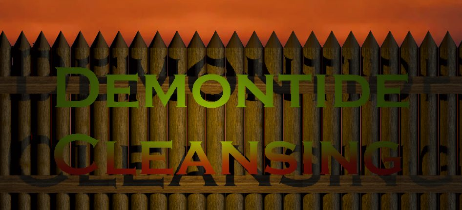
Text: Demontide Cleansing, 22/04/2025
Game Overview
Demontide Cleansing is a 2D top-down, rogue-lite survival game set in a high-fantasy medieval world. The player must endure escalating waves of enemies through a high-action gameplay loop that rewards both skill, strategy and creative itemisation. Survival depends on the effective use of item combinations, charms, magical familiars, and stat-based upgrades. Enemies present a growing obstacle to the player’s chance of victory. In the myriad of enemies, each sporting distinct abilities and behaviours designed to challenge the player. As enemy strength increases over the length of the game, the player is given opportunities to grow in parallel, utilising a system of experience points, gold, a collection of charms and their trusty magical familiars to enhance their capabilities. Acquiring these is a matter of interactive gameplay, whether through defeating enemies regularly, purchasing upgrades through a shop, completing side-quests and minigames, or defeating ‘major enemies’, the player is given a flexible amount of options to enhance their abilities and create creative combinations of upgrades to face increasingly difficult enemy waves. The game builds toward a climactic encounter with a final boss and their powerful horde, providing a narrative and mechanical culmination of the player’s progress.
Gameplay and Core Mechanics
The storyboard below presents the basic gameplay premise:
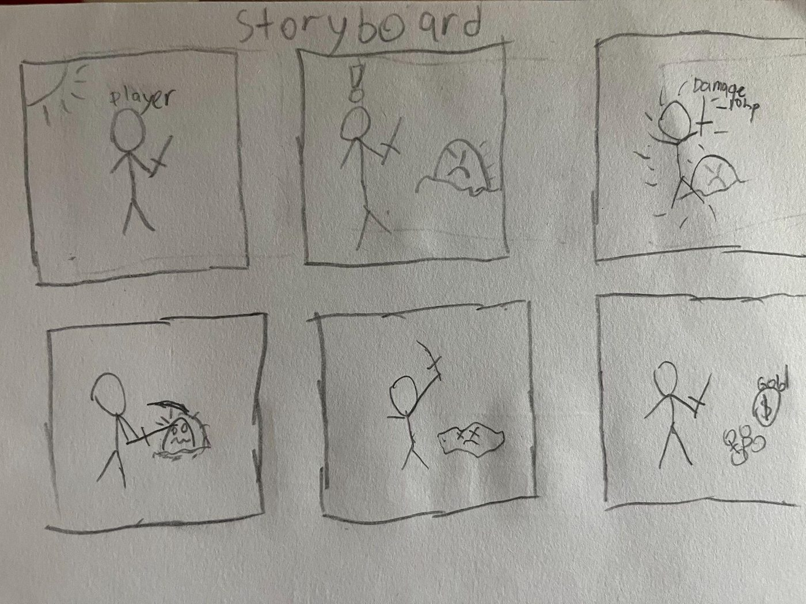
GAME OBJECTIVES:
The key objective of the game is to eliminate enemy waves during the night, acquiring rewards such as gold, experience points and other boons through defeating individual enemies and successfully completing side quests, to acquire the necessary upgrade via skills, as well as equipment and charms - collectively known as items - to progress to the next stage. The player will fight enemies during the night, resting during a grace period in the daytime allowing the player to prepare for the next battle by utilising a shop mechanic and acquiring items.
During the night time, enemy waves spawn, constantly looking to attack the player character. These waves progressively increase in strength, numbers, difficulty and enemy archetype as the stage progresses. The night times are tracked by a timer indicating the remaining duration of the night time or “round”. The collection of enemies will span across three main categories of enemies, “common enemies”, simple enemies that usually utilise their power in numbers, “elite enemies”, more durable and challenging enemies that, interspersed with the common enemies, can pose a greater threat to the player, and finally, “major enemies”, which take on the role of “boss” type enemies, usually appearing at the end of rounds or from generated side quests that can offer the player threaten the player with an additional challenge, but incite them with a great reward if defeated.
CORE CHALLENGES:
The core challenge of the game is surviving against waves of enemies to the end of the round, overall surviving multiple waves to progress to the following stage. To achieve this, the player must use positioning and dodging via movement actions, and aiming via their mouse cursor to attack enemies with their main weapon. Similarly to other games in the survivor genre, a major obstacle of the game is ensuring that the player is not overwhelmed by surrounding enemies, and ensuring a constant path of escape from oncoming threats. Within this gameplay, another challenge will be the eventual introduction of boss type enemies, which are significantly tougher than regular enemies and will pose a greater threat to the player.
CORE MECHANICS:
To assist the player in their endeavour, the player is given many tools to their disposal that they can use to survive against the onslaught of enemies:
Main weapon - Their main weapon is an always active ability that can be used to attack enemies, dealing damage. Some stats increase its effectiveness, with damage increasing its damage output against enemies, and attack speed decreasing the time it takes for it to cast the attack, in the case of our first playable character, an “area of effect” slashing attacking with their weapon.
Movement - Further expanded upon in player capabilities, movement refers to the player’s freedom of movement on the map.
Upgrades - Includes items and skills. Increases stats, or grants varying different boonful effects. Charms have the potential to be upgraded and evolved through specific select combinations, creating new charms that have even stronger effects.
In addition to mechanics that assist the player, the gameplay has additional mechanics to challenge the player. The aforementioned boss type enemies pose both a challenge and can grant upgrades when defeated. Furthermore, a side quest mechanic allows the player to complete challenge-type minigames ie; defeating one of these boss type enemies, or completing an objective like making it to a location across the map, for a similar reward, which will be expanded on further past this prototype.
REWARDS:
The player will collect two main rewards as they play. These rewards are coins (otherwise known as gold) and Exp, or experience points. The coins will randomly drop from enemies that the player destroys and will be used during the day phase where the player can purchase items from the shop in order to grow their strength by acquiring new effects, or granting more stats such as hit points, damage, attack speed, movement speed, etc. The Exp will drop from every enemy and reaching a full Exp bar will level up the player during combat, which will increase all of their stats, as well as allowing the player to acquire new upgrades at certain level thresholds. This allows players to have a sense of both progression and fulfil a major aspect of the player experience goal of “power-fantasy”.
PENALTIES:
The player can take damage from enemies. The main ways this can occur is through contact, whereby an enemy makes contact with the player’s hitbox, or through enemy projectiles and effects, whereby a summoned enemy attack makes contact with the player’s hitbox. In both instances, the player loses hit points and enters a brief duration of invincibility - “I-frames” - allowing the player to phase through enemies without taking further damage during so. Additionally, enemy attacks can leave a short-lasting effect on the player such as slows, stuns, etc.
Reaching zero hit points - zero health - the player will “die”, losing their gold, items, experience, and any other upgrades and power ups. They will additionally lose their progress and will be prompted with a game over screen, where the player can return to the main menu, from which the player may choose to restart their “run”.
PLAYER CAPABILITIES
The player will have a simple move set consisting of the WASD keys to move and an automatic slash in front of the player which attacks on a timer (attack speed) in the direction of the player’s cursor. Additional skills can be acquired through items and further upgrades that can grant the player more actions to undertake.
GAME OBJECTS
Object | Attributes | Value | Player Interaction |
|---|---|---|---|
Player Character | Health | 100 | Player can move freely in any direction using the WASD keys Movement speed would increase until 4 |
Movement Speed | 2 | ||
Attack Frequency | - | ||
Enemy (Goblin) | Health | 50 | Enemy will target the player and follow them |
Movement Speed | 1 | ||
Damage Dealt | 5 | ||
Player Weapon | Attack Speed | 1.75 | Attack rate would decrease until 0.5 with a level up |
Damage Dealt | 30 | ||
Enemy Spawner (Easy) | Spawn Rate | 5 |
Potential and Planned Game Designs
Enemy Behaviours
Planned enemy behaviours include exploring enemies’ own abilities over more simplistic designs. Projectiles from enemies are a common exploration of these. Other effects could include summoning environmental hazards like areas of fire or toxins or walls that obstruct player movement. These will be more effectively used on challenging enemies like elite-tier or major-tier enemies and provide the basis of enemy archetypes like artillery enemies, melee enemies, etc.
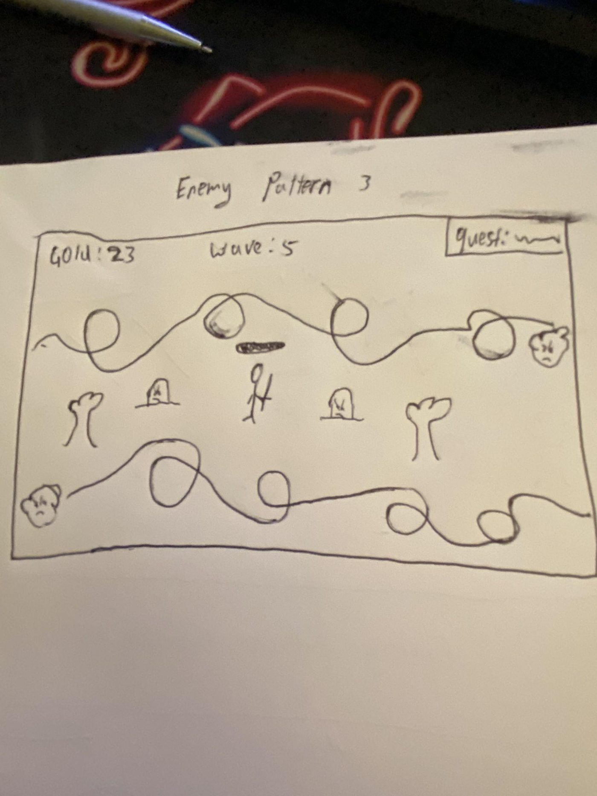 | 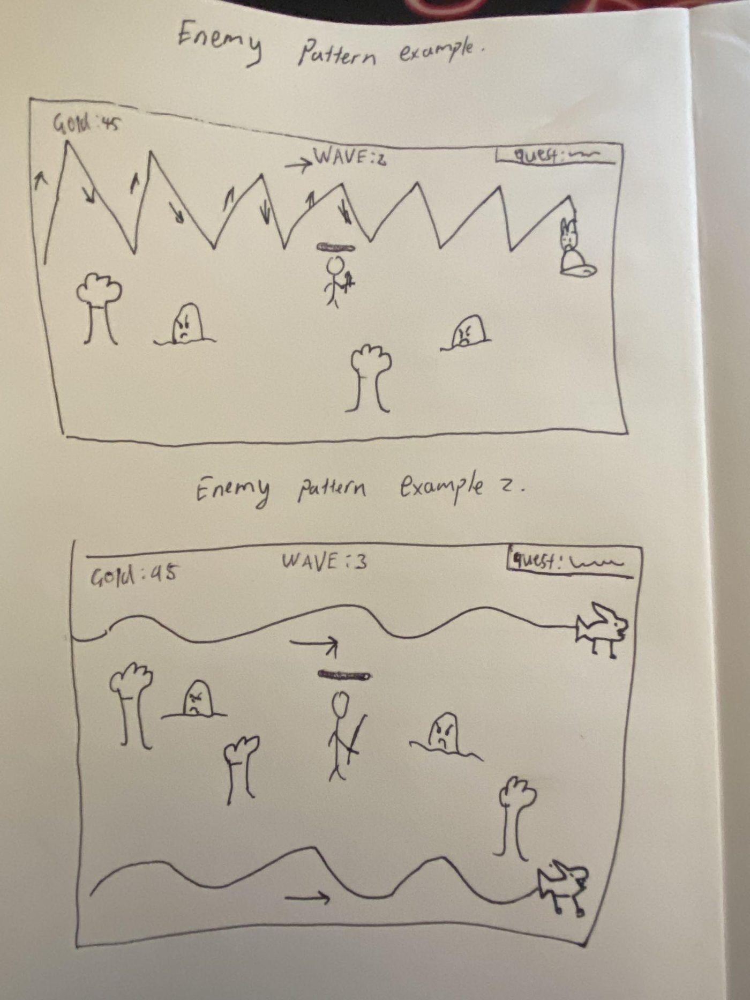 |
|---|
As shown above, potential enemy movement patterns are being explored to introduce unique challenges and keep gameplay engaging.
Ideas include: zigzagging enemy movement patterns, where enemies move in sharp diagonal lines, alternating directions to create jagged, erratic paths that test the player’s timing and aim. Another is the sine wave pattern, where enemies glide in smooth, wave-like motions across the screen, creating a rhythmic movement that makes it harder to land consistent hits. Finally, another potential pattern is the swirl, where enemies spiral across the screen in looping, circular motions, not necessarily toward the player, but in a sweeping path that increases the chance of collision through unpredictable coverage.
These movement styles offer distinct gameplay dynamics and could be used to vary difficulty or enemy behavior in future development.
Classes
Currently, the player is limited to a single class of character, a swordsman-fighter class of character. More classes are planned for the full design of the game, each with unique weapons and gameplay differences. Ideas include a more magic-focused class and a ranged class like an archer.
Abilities/Skills
In addition to the potential enemy designs, the player had potential actions for their character that have not been fully explored yet.
Dashing/dodging: By using the “Shift” key, the player can dash a short distance and temporarily become invincible - not unlike the aforementioned I-frames - to reposition themselves from a detrimental position.
Basic ability (Signature): By using the “E” key, the player can use a unique ability tied to their class of character. This ability will be on a cooldown and scale off upgrades too.
Ultimate ability: By using the “Q” key, the player can use an ultimate ability tied to their class of the character. This ability will either be on cooldown or be generated via combat with the enemies allowing for more rewards via fighting the enemy. The ultimate will be very impactful for the gameplay, being crucial in surviving against potential dangerous situations.
Active abilities from items: Using the number keys - currently limited to “1” and “2” in design, items or other forms of power ups may be actives that have their own unique effects on activation similarly to basic or ultimate abilities but to a lesser strength without being unique to the class.
These active abilities will be at the behest of a mana system that will require mana as a resource to activate.
Items (Charm Evolution)
Items, specifically charms, are as mentioned beforehand, planned to include a mechanic focused around evolving sets of charms into new charms that will have greater and new effects. This is an important mechanic that allows for greater creative expression from the player.
Side Quests
A potential inclusion to the game will be the side quest mechanic as aforementioned in the core mechanics section of this document. Side quests will reward the player for completing them and is a great addition for greater player interaction.
Familiars
Familiars are also an important mechanic that is planned to be introduced. These creatures will assist the player in defeating enemies with their own unique abilities. The player will be able to select one at the start of the game and can progressively collect more up to a as-of-now, undetermined maximum. The familiars separate themselves from items via their ability to upgrade as well, potentially having their own experience points gathered from the experience the player gains too.
Environmental Locales
Environmental Locales have also been discussed. For example, currently, the iteration of the shop will appear at the end of a complete round during the day time. This shop can be moved in the future as a locale, accessible on the map during the day time alongside other locales related to specific other mechanics, eg; quest-giver, familiar-trainer, etc.
Summary of thematics and gameplay mechanics into PX and Cycle 3 plans
Player experience goal
The role the player will take on is that of a heroic survivor in a fantasy setting, attempting to survive against hordes of enemies - monsters, demons, etc. The player experience will focus on giving the player a balance between power-fantasy, building up ungodly strength to take out waves of enemies in an instant through acquiring items and levelling up their stats, sufficient challenge to ensure player interaction in response to difficulty, and creativity, expressed through careful crafting of the rogue-lite build of items presented to the player.
To ensure the balance between the three expectations, mechanics like different tiers of enemies and different archetypes are crucial. They ensure that while the player can easily deal with simpler enemies as they acquire the sufficient upgrades and fulfil the power-fantasy aspect, they are still sufficiently challenged by an increasing difficulty that strikes that perfect balance aimed for. Additionally, player freedom and interaction will be a main focus as it complements creative expression of players. Side quests are a major focal point of this, as they are non-mandatory objectives the player can choose to pick up for their own benefit or challenge, while mechanics like dashes and I-frames ensure both freedom of movement and player-friendliness to ensure the player has sufficient means of actionable responses to challenges.
In addition to this, simplification of certain player actions to ensure a focus on different parts of the gameplay which will merit more player interaction was built into the mechanics, like the need to not click to use the main weapon, instead being based off an attack speed timer in the direction of the cursor, ensuring the player can focus on other aspects of gameplay.
Cycle 3 plans
In addition to the potential and planned game designs and mechanics mentioned earlier, exploring deeper into the mechanics that make up the core of the gameplay will be further expanded on. More items to fulfill creative expression of the player will be introduced, more unique effects that elevates the power-fantasy of the player will coincide in these inclusions. The fulfilment of the overarching progression to the overview’s stated finale is the sum goal.
Interface / Visual System Details
The visual interface of Demontide Cleansing is designed to display information for a few notable mechanics within the game while also ensuring visual clarity on the most important parts of the game. To achieve this, two designs have been proposed, one more focused around the player’s information clarity (giving enough information on the notable mechanics of the game), and the other, focused around the player’s visual clarity (reducing visual clutter to ensure a player’s gameplay is undistracted). Both designs have attempted to balance the information and visual clarity of the game with the different iterations leaning towards their respective sides rather than encapsulating only their respective design focuses. The play testers of the game are asked which version they prefer and a few other questions regarding specific parts of the UI, such as the placement of the health bar, and the necessity of certain displayed information.
Gathering the feedback, our findings will evolve the user interface system further with specific solutions derived from play tester feedback to balance both iterations into one.
UI CORE:
The health system will utilise a numerical bar that has an increasing maximum health (as the player acquires stats) - though it will not resize the health bar - and it will visually decrease as the player takes damage.
A timer will be displayed which details the round (night time) duration. An additional sidebar would exist for any other details in the game, such as sidequests.
The player will have a heads up display (HUD) which details their cooldowns for innate abilities (from the character class themselves), or from acquired items (charms, equipment or familiars).
He ads-up UI
Information Clarity Model -
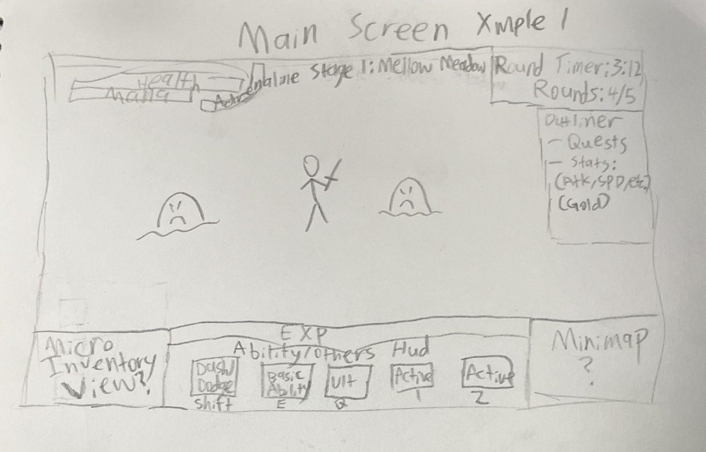
Visual Clarity Model -
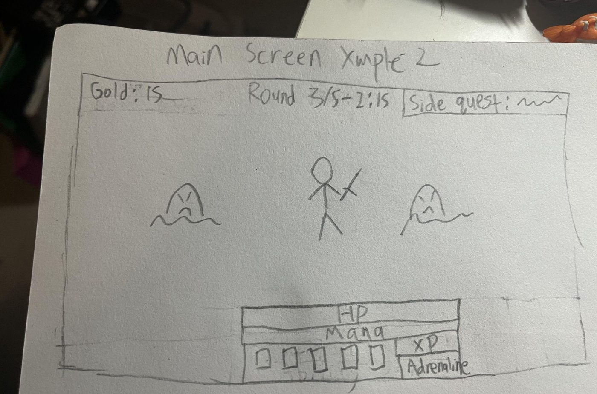
Game Systems Storyboard
The storyboard below visually outlines the game's flow, clearly showing the player's interaction with various game states and the conditions for transitions between scenes:

UI Flow Structure
UI Pipeline: Displaying how each UI interacts with each other.
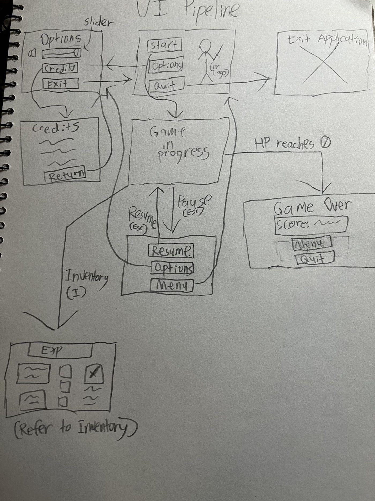
Menus:
The game will possess two menus: a start menu and a pause menu.
Main Menu: The game will start on the main menu, consisting of a ‘Start’ button, to start the game, an ‘Options’ button, to bring up options such as volume or keybinds, and a ‘Quit’, to exit the application. Within the options, the ability to change the volume or keybinds will be shown.
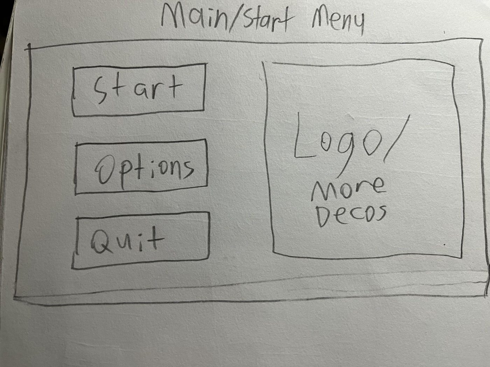
Pause Menu: The player can pause the game by pressing the "ESC key", and can continue by selecting "Resume" or re-entering ESC. The Pause Menu will fade the environment into the background, allowing the player to see the current paused game state but focusing on the menu in the foreground. This menu will be similar to the start menu with two notable differences. The resume button will replace the start game button, and the quit button will be replaced with the exit to menu button, which will exit the game to the start menu without saving the progress of the current game state. Additionally, the pause menu will also display the player’s current score.
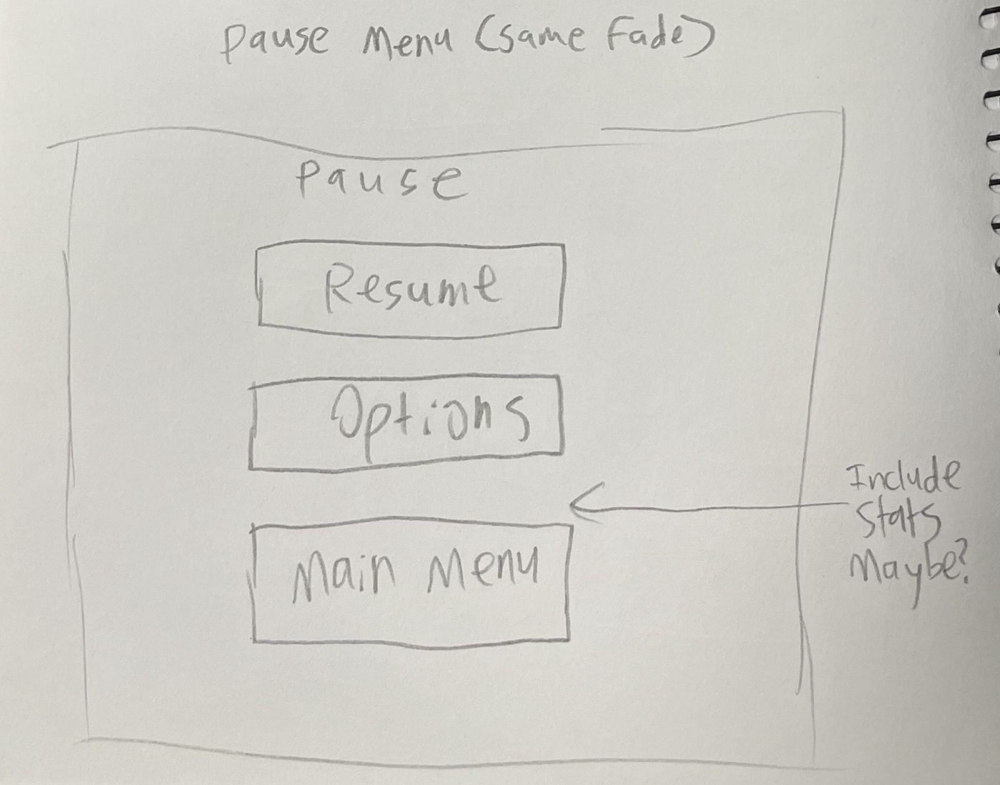
Inventory Screen: The player can bring up their current inventory of items, charms and further details (like on their character or weapon exp), by pressing the I key.
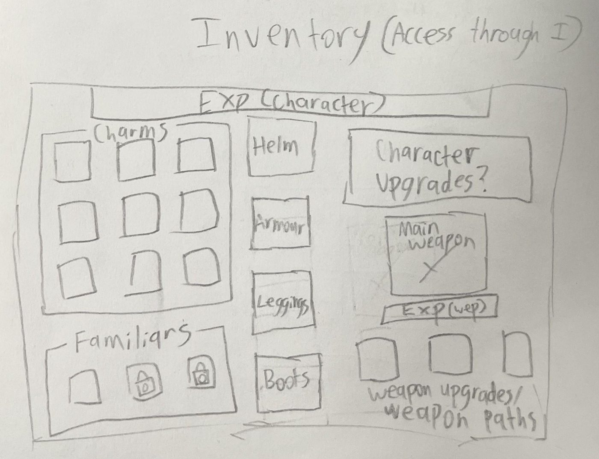
Shop Screen: Automatically opens after the end of a wave, where the player can purchase upgrades in exchange for their acquired coins/gold.
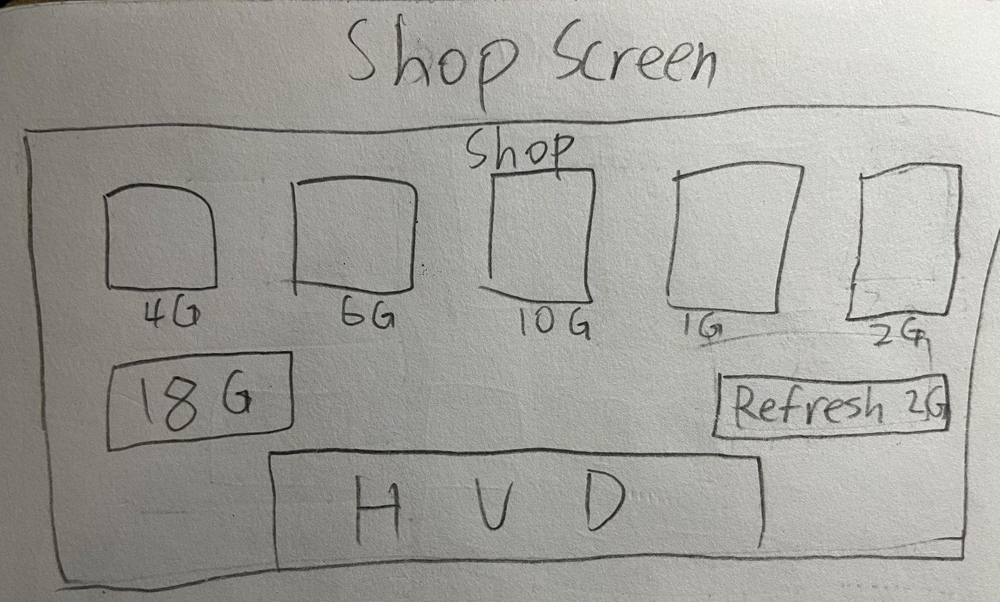
Level Up Screen: Automatically opens after acquiring the maximum amount of experience to make it to the next level. Like the shop, allows the player to acquire a specific upgrade, but for free and only limited to a selecting one.
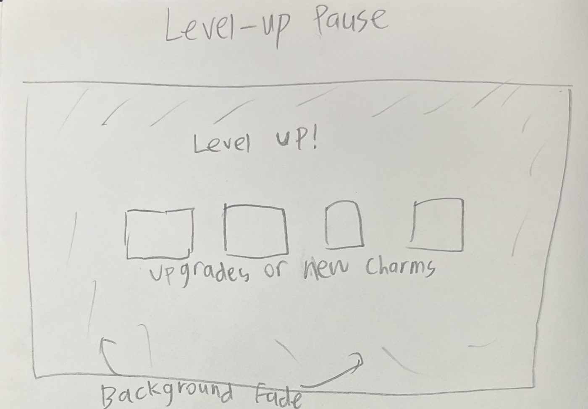
Results Screen: Displayed when the player survives all waves allowing the player to return to the main menu, with future plans to have this progress to the next stage instead and display relevant stats for the previous waves ie; amount of enemies and type of enemies defeated.
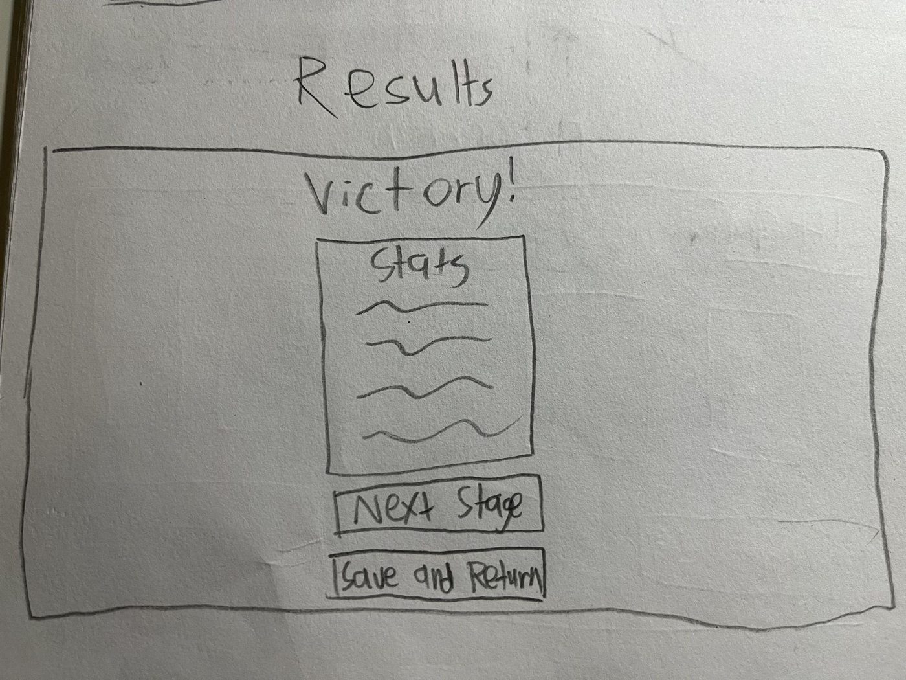
Game Over Screen: When the player's HP reaches 0, the "Game Over" screen is displayed which includes similar stats included in the aforementioned results screen. A message indicating defeat and the player's score are shown, and the player can exit to the main menu using the “Back to Main Menu” button.
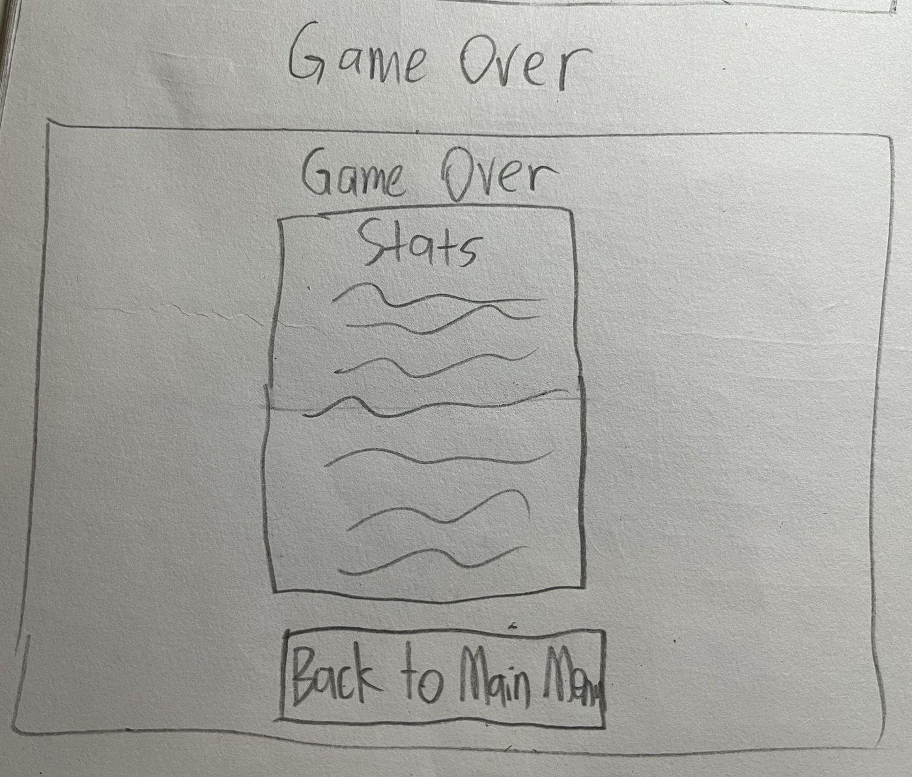
Outliner: An outliner will be included in the main HUD that notes details such as the current side quest active for the player. (Refer to the main UI to see both information and visual clarity models of the outliner.
(Disclaimer: All images of the ‘Interface/Visual System Details’ are prototype images for the game and are subject to both change and introduction into the game.)
Glossary
(This section exists to parse the thematic terms used in this document for more legibility)
Charms - Charms are the fanciful, in-game term to refer to items distinct from equipment. They are the game’s vanilla upgrades for unique effects such as adding a constantly damaging area of effect around you as an example.
Equipment - Equipment is the in-game term to refer to equipable items. These will be shown as pieces of armour, such as your helmet, chest piece, leggings and boots. They will influence your stats more so than charms, which usually grant effects to the player rather than stats.
Familiars - Familiars, or magical familiars, are pets that help you defeat enemies. Not unlike the player, familiars will have their own upgrades and abilities, though not controlled by the player.
Skills - Skills are activatable abilities that will cause varying different effects. Innate skills are referred to as abilities, they are class-dependent. Dash is a general skill that will always be available no matter the class or item but can be affected by external effects such as items or enemy debuffing effects. General skills come from items, more so from charms, as unique effects.